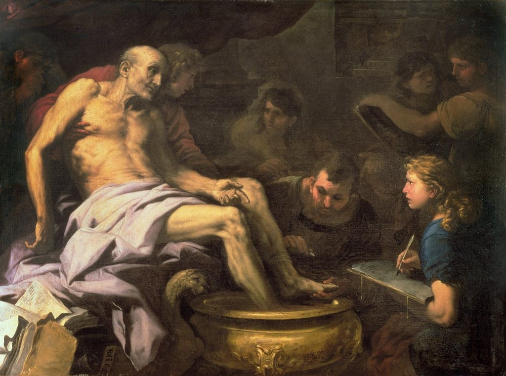
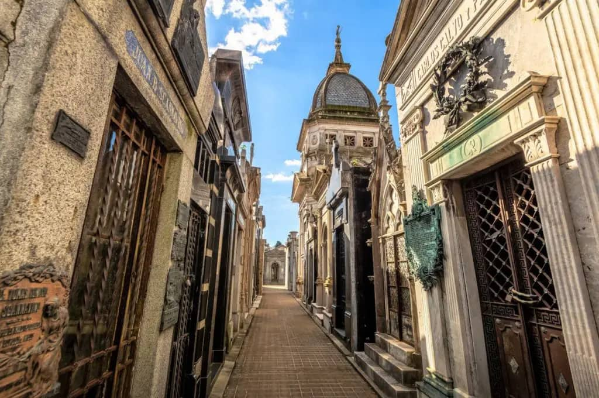
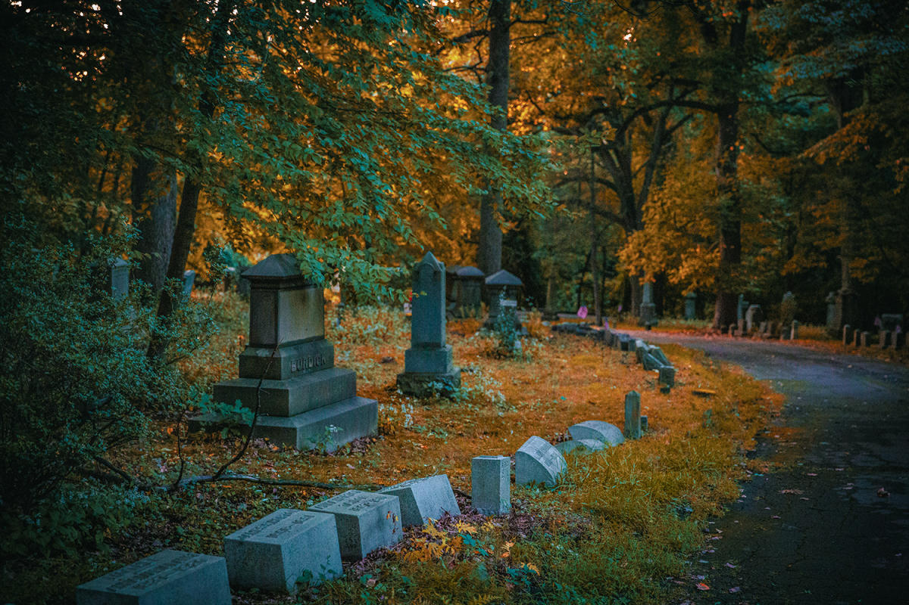

Acta est Fabula: Embracing Life's Theatrical Narrative
In the grand tapestry of human existence, the Latin phrase "Acta est fabula" resonates as a poignant reminder of life's transient nature. Translating to "The play is done" or "The story is finished," this phrase, often attributed to the Roman philosopher Seneca, encapsulates a profound perspective on the cyclical journey from birth to death. Let us delve into the rich philosophical depth of "Acta est fabula" and explore how it invites us to contemplate the narrative of our lives.
Theatrical Metaphor: Life as a Play
At its core, "Acta est fabula" draws a metaphorical parallel between life and a theatrical performance. Life unfolds as a narrative, with each individual playing a unique role on the stage of existence. The choice of "fabula" (play or story) conveys the idea that our lives are not stagnant but dynamic, evolving stories with a beginning, middle, and inevitable end.
Acceptance of Impermanence
Embedded within this expression is a Stoic acceptance of the impermanence of life. It serves as a reminder that, like a play reaching its conclusion, our lives too will come to an end. However, the philosophical richness lies in the acknowledgment and acceptance of this inevitability. "Acta est fabula" encourages us to confront the reality of mortality with grace and equanimity, viewing the end not as a tragedy but as a completion of a narrative arc.
Applauding Life's Journey
The addition of "plaudite" invites reflection on the appropriate response to life's completion. In the context of a theatrical performance, applause signifies appreciation for the actors, the plot, and the overall experience. Similarly, in the journey of life, "plaudite" encourages us to applaud and appreciate the richness of our experiences, the relationships we've cultivated, and the personal growth attained throughout our individual narratives.
A Call to Reflection
"Acta est fabula" serves as a call to reflection, prompting us to ponder the nature and significance of our own stories. What roles have we played? What lessons have we learned? What impact have we made on the grand stage of humanity? It challenges us to assess the meaning we've derived from our experiences and the mark we've left on the world.
Embracing the Entire Narrative
The beauty of this philosophical perspective lies in its holistic approach to life. It encourages us not only to appreciate the present moment but to embrace the entirety of our narrative—the highs and lows, the joys and sorrows, the victories and defeats. By acknowledging that "Acta est fabula," we are prompted to live with intention, purpose, and an awareness of the fleeting nature of time. In conclusion, "Acta est fabula" invites us to view life as a grand theatrical production, urging us to play our roles with mindfulness and purpose. As the curtain falls, the phrase encourages us to applaud not only the conclusion of our own stories but also the collective human experience. It is an affirmation that, in the grand theatre of existence, every life is a significant and unique contribution to the unfolding narrative of humanity.
Cemeteries as Open-Air Museums: Unveiling the Art and History of Final Resting Places
In the hushed tranquility of cemeteries, where the whispers of the past linger amidst weathered tombstones and age-old trees, a unique narrative unfolds. Cemeteries, often overlooked as mere resting places, are, in essence, open-air museums that house an untold wealth of art, history, and cultural heritage.
A Canvas of Artistic Expression
As one strolls through the carefully manicured paths of a cemetery, a remarkable gallery of artistic expression comes to life. Tombstones, far from being mere markers, emerge as intricate sculptures and memorials. Each one tells a story, not just through words but through the artistry of design. Ornate reliefs, intricate carvings, and symbolic motifs transform grave markers into individual works of art, creating a tapestry that speaks of the diverse lives and personalities that once graced the earth.
Sculptures and Monuments: Commemorating Greatness
Cemeteries serve as repositories of sculptural masterpieces and monuments, each contributing to the rich cultural landscape.
From majestic angels with outstretched wings to stoic statues guarding mausoleums, these works of art pay homage to the historical and cultural significance of the individuals they memorialize. They are not just grave adornments; they are tangible expressions of the impact these individuals had on their communities and the world at large.
Historical Significance: A Chronicle of Lives
Every cemetery bears witness to the passage of time, and the gravestones themselves become pages in a historical chronicle. As you wander among the tombstones, you may encounter the final resting places of visionaries, scholars, leaders, and ordinary people who, collectively, shaped the course of history. The inscriptions on these markers offer glimpses into the societal norms, beliefs, and values of bygone eras, providing a living history lesson within the quiet confines of the cemetery.
Cultural Heritage: Diversity in Death
Cemeteries, like museums, reflect the cultural diversity of the communities they serve. Different sections may house distinct styles of tombstones, reflecting various religious beliefs, ethnic backgrounds, and societal norms. This diversity encapsulates the shared human experience, fostering an appreciation for the myriad ways in which people have expressed their beliefs and honored their departed loved ones.
Guided Tours and Educational Initiatives
Recognizing the educational potential of cemeteries, many locales now offer guided tours and educational programs. These initiatives provide visitors with a deeper understanding of the historical, cultural, and artistic significance of the cemetery. Whether exploring the architecture of mausoleums, deciphering the symbolism of grave markers, or learning about the lives of notable individuals interred, these guided experiences transform cemeteries into dynamic open-air classrooms.
Preserving the Legacy
Much like traditional museums, cemeteries require preservation efforts to maintain their historical and artistic integrity. Restoration projects, documentation of grave inscriptions, and conservation of sculptures ensure that these open-air museums continue to serve as repositories of cultural heritage for future generations.
In conclusion, cemeteries are not just final resting places; they are open-air museums waiting to be explored. As we wander through these sacred grounds, we unveil the rich tapestry of art, history, and cultural heritage that lies beneath the surface. Cemeteries invite us to reflect on the profound impact of individuals who have shaped our world and offer a unique opportunity to engage with the past in a tangible and deeply meaningful way.
What is funerary art?
Funerary art refers to artistic creations that are associated with rituals, ceremonies, and the commemoration of the deceased. It encompasses a wide range of objects and forms of expression that serve as a visual and symbolic tribute to those who have passed away. Funerary art has been a significant aspect of various cultures and time periods, reflecting diverse beliefs, customs, and attitudes towards death.
Here are some common examples of funerary art:
Tombstones and Grave Markers: Perhaps the most recognizable form of funerary art, tombstones and grave markers are often inscribed with the name, dates of birth and death, and sometimes symbols or images that represent the life, interests, or beliefs of the deceased.
Sarcophagi: In cultures that practiced burial, sarcophagi were ornate stone coffins often decorated with intricate carvings or reliefs. These served as both a practical container for the deceased and a symbol of status or religious beliefs.
Mausoleums and Tombs: Elaborate structures, such as mausoleums, serve as above-ground burial places. They can be architectural marvels, adorned with sculptures, mosaics, and other decorative elements.
Memorial Sculptures: Sculptures placed in cemeteries or other memorial spaces can be dedicated to individuals or serve as general monuments to the deceased. Common motifs include angels, religious figures, or representations of the deceased.
Cenotaphs: These are monuments erected in honor of a person or group of people whose remains are elsewhere. Cenotaphs can be found in cemeteries, churches, or public spaces.
Cemetery Architecture: The layout and design of cemeteries themselves can be considered a form of funerary art. The arrangement of paths, landscaping, and the integration of artistic elements contribute to the overall aesthetic and atmosphere.
Funerary Masks and Portraits: In some cultures, masks or portraits of the deceased were created and displayed during funeral ceremonies. These representations aimed to capture the likeness and essence of the individual.
Memento Mori Art: This type of art, prevalent in the medieval and Renaissance periods, focused on the theme of mortality. Memento mori pieces often featured skulls, hourglasses, and other symbols meant to remind viewers of the transient nature of life.
Funerary art serves not only as a means of memorializing the dead but also as a reflection of cultural, religious, and personal attitudes towards death and the afterlife. It provides a tangible connection between the living and the deceased, allowing for the expression of grief, remembrance, and celebration of a life that once was.